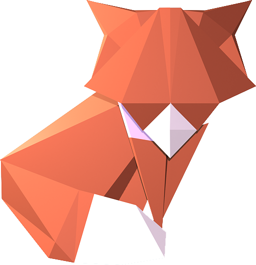

Latest Articles
unread
2015/8/3 19:20:32
Phasellus faucibus erat sit amet eros gravida posuere.
2015/8/3 15:10:53
Maecenas viverra augue a ipsum imperdiet, et viverra purus gravida.
2015/8/2 14:22:32
Vivamus blandit ex vel vulputate porttitor.
2015/8/1 20:17:32
Aenean blandit diam at odio vestibulum, eget fermentum tempus.
2015/7/23 19:20:32
Donec in est vulputate nulla tincidunt viverra.
2015/6/16 19:20:32
In scelerisque massa vitae est condimentum fringilla.
2015/5/3 19:20:32
Praesent finibus eros tristique, suscipit est ut, facilisis elit.
2018/12/23 19:20:32
Praesent finibus eros tristique, suscipit est ut, facilisis elit.
2018/12/27 19:20:32
Praesent finibus eros tristique, suscipit est ut, facilisis elit.